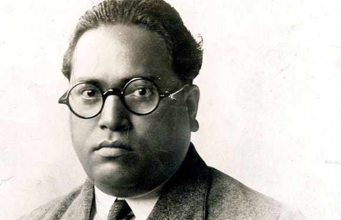

The first prime Minister of India ruled a chaotic newborn country right from its independence in 1947 until his death in 1964. Nehru’s legacy is that of an extremely liberal, socialist and secular leader, who under the apprenticeship of Mahatma Gandhi, firmly put India on the course in which it runs today. Nehru was a man of letters and is also credited with creating the Planning Commission of India.
One of the greatest personalities ever born in India, Ambedkar was a jurist, political leader, philosopher, anthropologist, historian, revolutionary, writer and much more. He was a revolutionary leader and held forth on his views even if they went against the popular grain. He also revived Buddhism in India, a legacy still seen in Dalit communities, who’s cause Ambedkar championed throughout his life. Ambedkar is also known as the Father of the Indian Constitution, on behalf of which the nation celebrated Republic Day
|  | |
| Great Leader of INDIA | Top Leaders of INDIA |